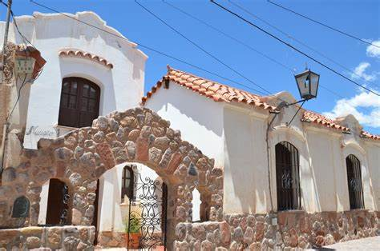
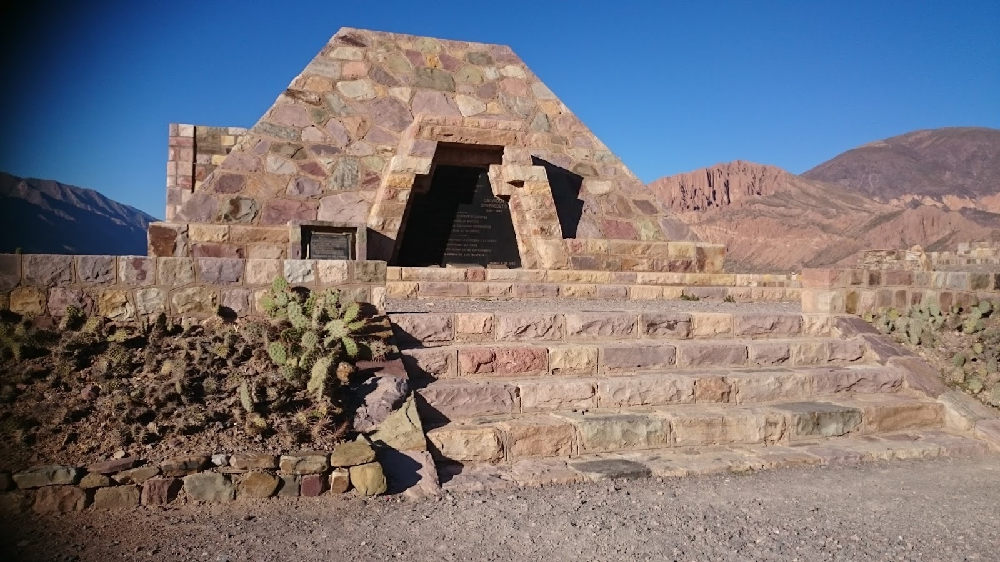
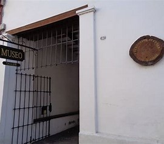
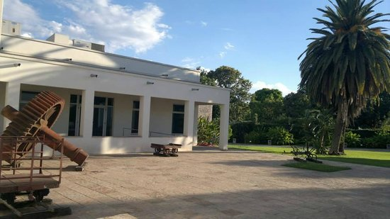

Museo regional ubicado en Humahuaca que exhibe piezas arqueológicas y arte religioso del norte argentino.
Lista de museos de Argentina – Jujuy
-
Museo Justiniano Torres -
Museo Arqueológico Eduardo Casanova Situado en Tilcara, es uno de los museos más importantes del NOA, con colecciones prehispánicas y una sede junto al Pucará.
 -
Museo Fundación Recrear Ubicado en San Salvador de Jujuy, este espacio promueve el arte y la educación con exposiciones de artistas locales y talleres.
 -
Museo Ledesma En Libertador General San Martín, ofrece una mirada sobre la historia local y el patrimonio natural del Valle de San Francisco.
